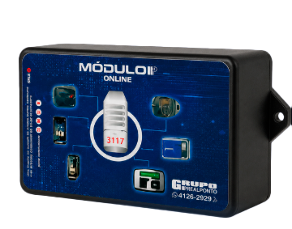

Coleta online sem depender de pendrive
Comunicação remota para relógios instalados onde sua operação precisa
Pensando em tornar a coleta dos registros de ponto mais simples, rápida e segura, o Grupo RealPonto desenvolveu o Módulo de Comunicação Online.
Com ele, sua empresa pode realizar a comunicação entre os relógios de ponto e o sistema de forma remota, utilizando conexão via internet e tecnologia 4G. Isso é especialmente útil quando os equipamentos estão instalados longe do RH ou em locais onde não existe um ponto de rede cabeada disponível.
A solução reduz a necessidade de deslocamentos e coletas manuais por pendrive, trazendo mais agilidade para empresas com uma ou várias unidades.
Coleta online
Comunicação 4G
Instalação onde necessário